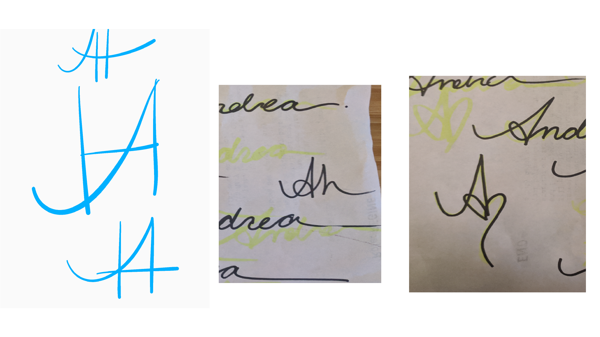
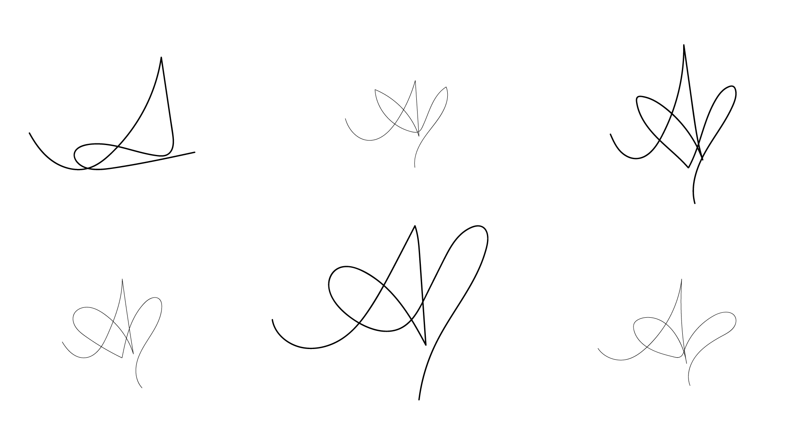
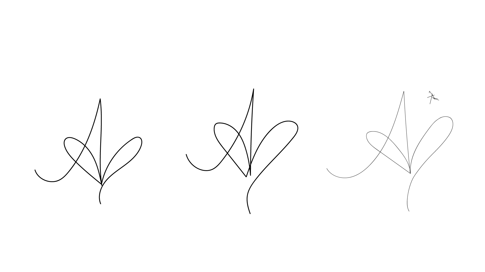

Logo Design Process
Brief overview of my logo design process:
The final design

Step 1: Simplifying my signature

Step 2: Rendering the signature design elements in Illustrator, playing around with the 'A'

Step 3: Refining the shape
Step 4: The final design
Step 5: Some creative alternatives